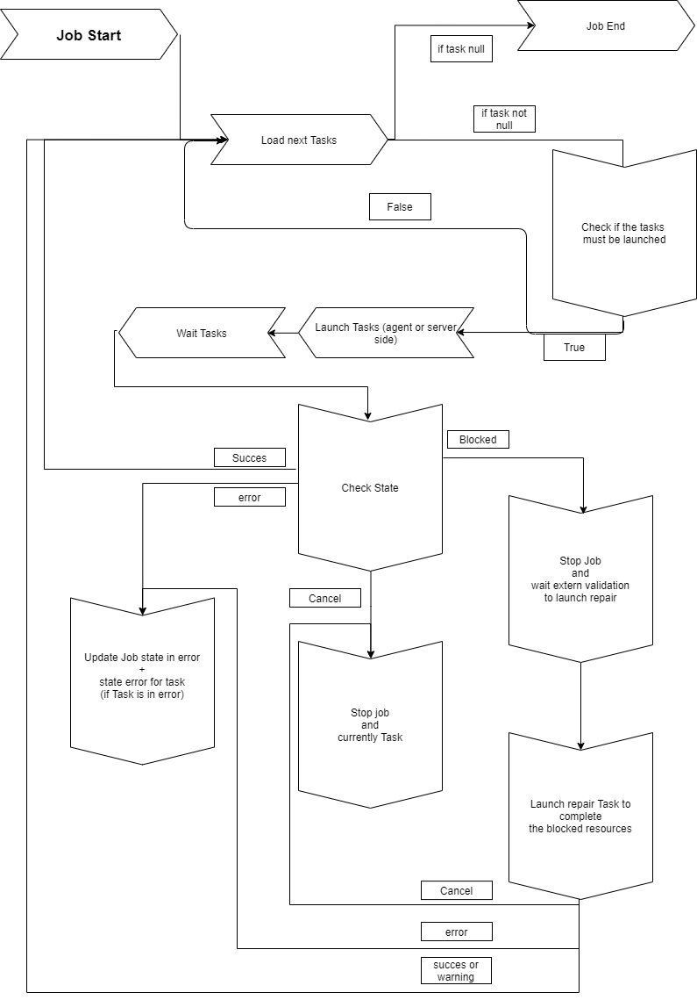

Usercube-Invoke-Job
This tool launches a job on the agent side.
Behavior Details
The Usercube-Invoke-Job.exe tool is a state machine.

When a job is launched, the state machine starts by computing all the tasks that must be launched in the job.
Each task is assigned a launch order which can be configured in Job steps. All the job's tasks are grouped together according to their launch order, and they are launched by group. Such task grouping allows the job to be faster executed.
The launch orders of all the tasks of a job can be listed by using the Usercube-Get-JobSteps executable.
Before any task is launched, the state machine checks the task's parent tasks in order to verify whether the task must be launched or not.
If the task must be launched, then the state machine checks whether the task should be started server- or agent-side.
Then the task is launched, and then:
-
if the task completes successfully, then the next task is loaded and started, or if this was the last task then the job ends successfully;
-
if the task exits in error, then the whole job exits in error and stops;
-
if the job is requested to stop from the UI, then the job's state switches to
cancelledand is transmitted to the current task in order to not launch the next task;A canceled job is not stopped straight away, as the current task first needs to be finished.
-
if the task exits in error while the warning mode is active, then the next job is loaded.
Only export tasks can have this warning mode.
-
if the task exits blocked, then the whole job stops and can be restarted manually at its breakpoint;
Only synchronization and provisioning tasks can exit blocked.
In the case where the job is blocked and restarted:
-
if the blocked task is a Synchronize Task , then the state machine runs a synchronization validation on the related connector, and uses the id of the blocked task instance to synchronize the related tables;
-
if the blocked task is a
GenerateProvisioningOrdersTask, then the state machine forces the same provisioning on the related connector.Both the synchronization validation and the forced provisioning are virtual jobs that do not exist in the database. However, they will be visible in the UI which keeps track of any launched task.
In both cases, the state machine resumes the job with the tasks that were not started due to the blockage.
Any task launched by the state machine is linked to a job instance in order to keep track of the launch group.
Example
./Usercube-Invoke-Job.exe -j "AccessCertificationEnd" --api-secret secret --api-client-id Job --api-url "http://localhost:5000"
Arguments
| Argument Name | Details |
|---|
| --job-identifier (-j) required |
Type
String Description Job's identifier to be launched. |
| --repair-job (-r) optional |
Type
No Value Description Bool to Decide launch Synchronization Validation or Provisioning with force. |
| --begin-job-step (-b) optional |
Type
String Description The step from which the job starts. |
| --end-job-step (-e) optional |
Type
String Description The step at which the job stops. |
| --task-identifier (-t) optional |
Type
String Description Specify the identification of the task to be started in the job (only this task will be started). |
| --force-synchronization-provisioning (-f) optional |
Type
Int64 Description Forces execution when the threshold is reached or exceeded. |
| --task-type (-c) optional |
Type
String Description The first task found with this type is launched. |
| --task-string-contains (-s) optional |
Type
String Description Launches all tasks with an identifier containing the given value. |
| --api-client-id required |
Type
String Description Login used to authenticate to the server. Every request from agent to server needs to be authenticated with an OpenIdClient Connect /Secret pair, linked to a profile with the relevant permissions. |
| --api-secret required |
Type
String Description Password used to authenticate to the server. Every request from agent to server needs to be authenticated with an OpenIdClient Connect /Secret pair/Secret pair, linked to a profile with the relevant permissions. |
| --api-url required |
Type
String Description URL of Identity Manager server. |